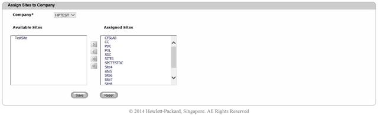
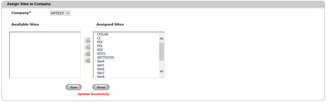

Create Company-Site Assignment
To create a Company – Site assignment,
1. Navigate Assignment >> Assign Sites To Company on the DCTrackMobileWeb menu bar.
You will see the Assign Sites to Company screen.
2. You will see the list of current Available Sites and/or Assigned Sites in their corresponding text boxes.

Figure 107: Assign Sites to Company- Screen with list of Available Sites/Assigned Sites
3. Select a Site from the Available Sites list.
Can I select multiple sites for assignment?
Yes. Press [Ctrl] key on your keyboard while selecting different sites.
4.
Click  to move the selected site(s)
to the Assigned Sites list.
to move the selected site(s)
to the Assigned Sites list.
Can I still return an assigned site to Available Sites list?
Yes. Select the assigned site(s) then Click icon to return selected site(s) to the Available Site list.
5. Click Save button to complete the assignment process or else click Reset button to refresh the page fields
You will see the successful assignment message.

Figure 108: Assign Sites to Company Screen – Successful Assignment
Can I move all sites to Assigned Sites and vice versa?
Yes. Just click  icon to move all available sites to Assigned
Sites list. Similarly, you can return all assigned sited to
Available Sites by clicking on icon.
icon to move all available sites to Assigned
Sites list. Similarly, you can return all assigned sited to
Available Sites by clicking on icon.